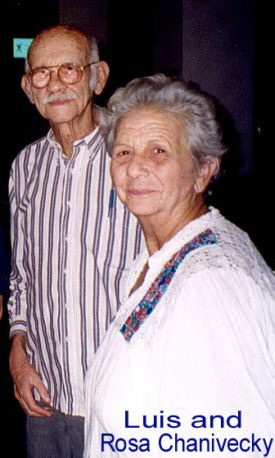

Traducido por Joel Quezada

No recuerdo con
exactitud el día en que lo conocí pero se que desde entonces
y a pesar de la diferencia en edades y carácter, Luis
Chanivecky siempre me trató como a un amigo –con
extraordinaria inteligencia y cordialidad. Luis era una
de esas personas a quienes la gente joven de hoy se le
puede acercar con confianza. Era un joven perpetuo. No
era difícil establecer un diálogo acerca de su familia;
la familia de uno mismo, su vida de viajero, compositor,
judío y cubano.
Siempre fue
hospitalario por excelencia –un conversador feliz
y abierto. Para él, la sinagoga era como su hogar. Disfrutaba
compartir sus pensamientos y su espacio con el resto de
sus conocidos. Nunca lo vi saludar a alguien de mala gana
o sin deseo de hacerlo. Estaba a cargo de los servicios
religiosos en el Patronato y aunque su edad y su grave
problema de visión lo limitaban, no dudó en involucrar
a más judíos en la lectura del Torá, servicios religiosos
y en la vida judía de nuestra comunidad. Había una característica
que estaba ausente en él: la arrogancia. Siempre fue muy
humilde, con el corazón abierto, noble y hospitalario.
Desde que
lo conocí, supe que era una fuente viviente de la historia
de nuestra comunidad y de la experiencia de vivir en este
siglo como judío en Cuba. Un día, le sugerí que fuéramos
al cementerio en Guanabacoa, para que pudiera platicarme
acerca de los judíos sepultados ahí. Aceptó inmediatamente
con la única condición de que le hablara con anticipación
y de que encontrara un medio de transporte. Acostumbraba
a caminar mucho [tenía la tendencia a hacerlo en exceso]
y cuando llegué por él, Rosita me habló desde el balcón:
“Cuídemelo mucho”.
¡Qué día!
Al llegar al cementerio por un momento pensé que no llegaría.
Luis me dijo que debería hacerle preguntas y que él me
contestaría. Hablamos acerca de cómo eran el Centro Israelita,
la Vieja Habana y del Patronato antes de la Revolución
aún más de lo que hablamos acerca de quienes estaban sepultados
en el cementerio. 
Recuerdo que
almorzamos en el paladar La Guarida, la locación de la
película “Fresas y Chocolate” y pasamos medio
día ahí. Hablamos acerca del dueño de las fotos que colgaban
en la pared. En ese momento, la personalidad de Luis el
compositor se adueñó del escenario. Luis, el compositor
de “La Luna en tu mirada”, “Locura Azul”
y la “Bossa Cubana”. Cuando se estrenó “Los
Zafiros”, recuerdo que Luis me dijo que cantaron
varias de sus composiciones en la película. Y se los platiqué
a los amigos de mi generación (quienes sabían acerca de
Los Zafiros solo lo que sus padres les habían dicho) que
un hombre judío había compuesto varias de las canciones
del cuarteto estelar. ¡Qué sorpresa al ver los créditos
y ver que el nombre de Luis no estaba incluido! En el
Kabbalat Shabbat siguiente le pregunté a Luis que había
sucedido. Con modestia me dijo que la historia que Hugo
Cancio, hijo de Miguel Cancio y productor de la película,
había hecho –había omitido el nombre de Luis en
los créditos de la película. Desafortunadamente el error
nunca fue corregido, pero eso no disminuyó el orgullo
de la comunidad y sus amigos. La película, casetes y CDs
han recibido buenos comentarios y se venden bien. Comigo
permanece otro recuerdo de esa conversación. Luis me dio
un casete con casi toda su música, incluyendo “La
apertura de Anna Frank”, compuesta como una obra
teatral. Aunque nunca fue llevada al escenario en nuestra
comunidad, Luis me dijo que en los Estados Unidos, la
música había sido tocada durante un programa de los Judíos
en Cuba.
Puedo decir
muchas otras cosas acerca de este hombre notable cuyos
mayores atributos eran su humildad y su modestia. Era
caracterizado por un excelente sentido del humor y por
la felicidad de alguien que sabe que su vida ha sido productiva.
Sentía un intenso amor por su familia. Recuerdo cuando
estábamos sentados en la mesa del almuerzo en Viñales
a donde fuimos en una ocasión con June Safran. Luis estaba
feliz. June lo había invitado a acompañarlo con uno de
los grupos que había traído de los Estados Unidos y solicitó
traer a su nieto, a Rosita y a Livat. El cuarteto vino
y se sentaron codo a codo. Había un video del grupo Simcha
y una presentación acerca de cómo alguien de tan lejos
como Nueva York puede uno conocer a un caballero de Yaguajay.
Estas líneas no pretenden ser un homenaje a Luis. El nunca
hubiera solicitado algo así, son tan solo pasajes que
recuerdo.
Quienes participamos
en la ceremonia colectiva de Bar/Bat Mitzvah en 1997 recibimos
un set de tefilin por parte del Dr. Miller en nombre del
Patronato. Fueron Luis y el Rabí Roberto Feldman quienes
me enseñaron a utilizar el tefilin. Hoy, cuando entremos
a su sinagoga, su centro comunitario, no debemos olvidar
a Luis. Le damos las gracias a Luis, a Marcus Matterin,
a Moisés Baldas y a otros que ya no están con nosotros,
porque nuestra sociedad no siguió el destino de la United
Hebrew Congregation. Tenemos el patronato porque tuvo
fundadores que reunieron fondos para establecerlo y darle
vida. Pero también existe porque gente como Luis, aún
en tiempos difíciles de discriminación religiosa, tuvieron
un miniano –cubano o halachita– como para
que nunca pudiera ser cerrado. Hubo un renacimiento de
la vida judía en Cuba porque ha habido apoyo continuo,
aún en el peor de los tiempos.
Sobretodo,
Luis era un buen hombre. No sé si alguna vez se expresó
mal de alguna persona; por lo menos nunca lo hizo estando
conmigo. Era bueno porque no conocía otra forma de ser.
Era un hombre de su comunidad, de su vecindario, de su
familia. Era un hombre común, uno de esos hombres con
los pies firmes sobre la tierra como Abraham Lincoln acerca
de quién se dijo, “Dios los ama tanto que hizo muchos
de ellos”.
Arturo
López Levy
Julio 2000